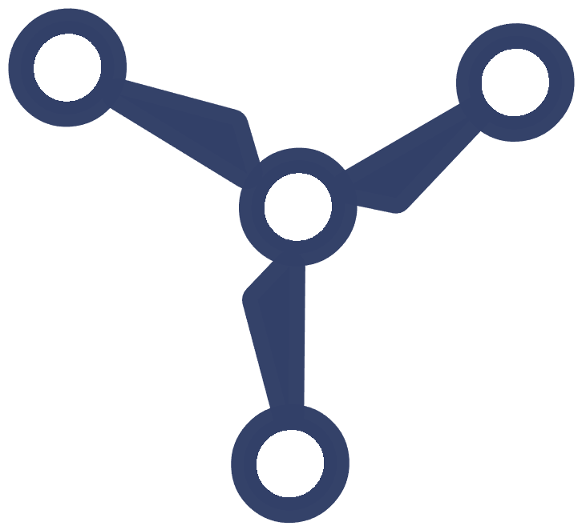

Aligning the renewable supply chain
Ality models every supplier, part and dependency behind offshore wind as a live graph — so you can integrate new partners, surface hidden risk, and source with confidence.

Integrating new work into large, complex supply chains
Offshore wind chains run seven tiers deep and span hundreds of suppliers. For a new product, proving it fits is slow and guarded; for the builders, evaluating it means opening up sensitive designs. Ality makes the match — without either side exposing their work.
Two agents, one shared knowledge base — nothing confidential crosses the line
A new client and the people building the project each work with their own Ality agent. The agents collaborate against a shared knowledge base while every side's sensitive data stays put — so the fit report gets sharper without exposing anyone's work.
- Product specs & performance
- Pricing & capacity
- Proprietary IP
- Designs & requirements
- Sourcing & schedules
- Commercial terms

One graph for your entire supply network
The shared knowledge base both agents reason over — open data and expert input in a single graph, with each side's confidential context kept private.
Multi-tier mapping
See past tier one to the raw materials — automatically resolved and continuously updated.
Risk signals
Concentration, geography and lead-time alerts ranked by their impact on your projects.
Alternative sourcing
Qualified, ready-to-integrate suppliers matched to every gap in your network.
Geospatial view
Map suppliers and dependencies by region to model exposure to ports, policy and weather.
Live monitoring
Streaming updates keep the graph current as suppliers, orders and conditions change.
Built to connect
APIs and integrations slot Ality into your ERP, procurement and data stack.
Let's map your network.
See your supply chain as a live graph in under two weeks. Book a walkthrough with our team.